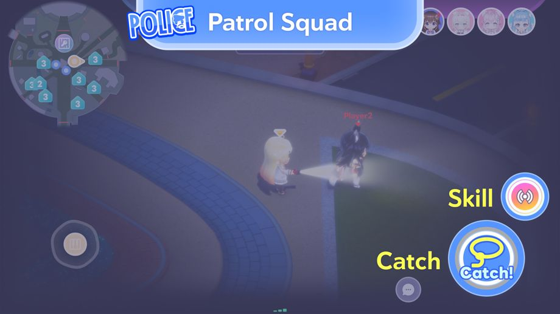

2026-08-28 11:00:00: The new Minigame "Shadowbound Chase" begins.
◆ Minigame Added
2026-08-28 11:00:00〜
◆Entry Conditions
Clear the Area Quest "Shadow Feast, Fiery Chase".
* Unlock by completing Main Quest Chapter 1 "Harmony Garden".
* For Multiplayer Private Rooms, you can play it by clearing Main Quest Chapter 1 Episode 4 "Mythical Connection".
New Minigame "Shadowbound Chase” Overview

Shadowbound Chase is a Minigame where two teams compete: the Prank Gang who runs away, and the Patrol Squad who chases them down.
Prank Gang

The Prank Gang wins by escaping the Patrol Squad and unlocking all five facilities.
To unlock a facility, you need to use keys that are scattered throughout the park.
◆Controls
・Pick Up: Tap near a key to pick it up.
・Use: While holding a key, approach a facility, and hold the "Use" button to use it.
* The button will change when holding a key.
Patrol Squad

The Patrol Squad wins by catching all members of the Prank Gang.
You can catch a member of the Prank Gang by approaching them and pressing the "Catch" button.
The Patrol Squad also wins if the Prank Gang fails to unlock all five facilities within the time limit.
Rescuing Prank Gang members

You can rescue a teammate by holding the "Rescue" button near them.
You can rescue a caught teammate by pressing and holding "Rescue" near them.
Prank Gang’s Laser Device

The Prank Gang can disable devices to gain an advantage during the match.
When the laser device is disabled, the number of keys required to unlock the facilities will be reduced by one.
To start disabling the device, step on one of the switches in front of it.
2 players can disable it faster than one.
Patrol Squad Skills

The Patrol Squad members can use skills.
There are three types, which are randomly assigned to each member.
◆Skills
・Speed up: Increases movement speed.
・Radar: Locates nearby Prank Gang members.
・Stealth: Become semi-transparent, making you harder to spot.
* Skills are only active for a limited time.
* It cannot be used again until the gauge is full.
Rewards

Rewards earned are based on your score, regardless of whether you win or lose!
Harmony Garden Coins can be earned.
Harmony Garden Coins can be exchanged for items at the NePoLaBo Mart.
Important Notes
・The duration and contents may change without warning.